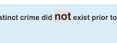

# UoPeople
Quiz Emphasise negative words Tool
This tool emphisise the words like
not, rarely and hardly in the quiz questions. It helpes to choose the negative answers.
Please test it in the review quiz before use in graded quiz or final exam.
# How to use
- Drag this ->
Emphasise
<- link into the bookmark bar of your browser.

- Open any quiz in moodle
- Click the bookmarklet that you dragged into your bookmark bar
- If there is a negative word in the questions, it has been changed the color. If there's no negative words, nothing happened.